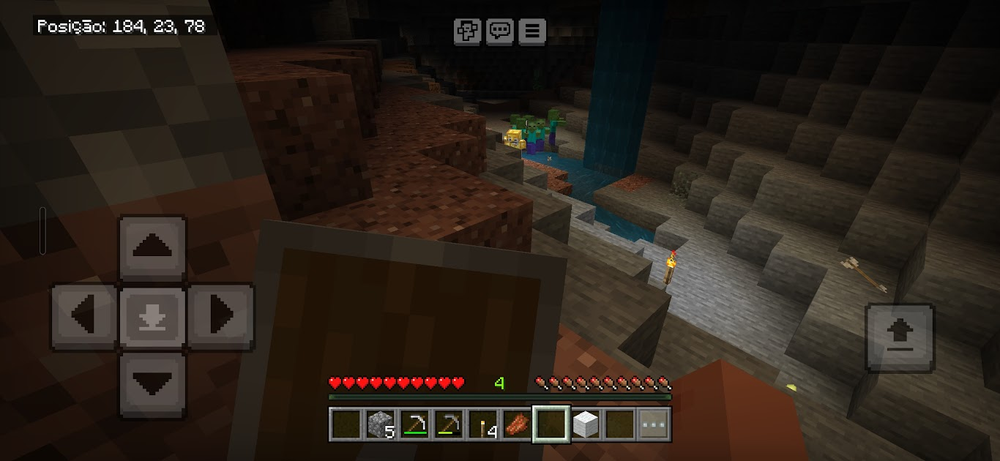
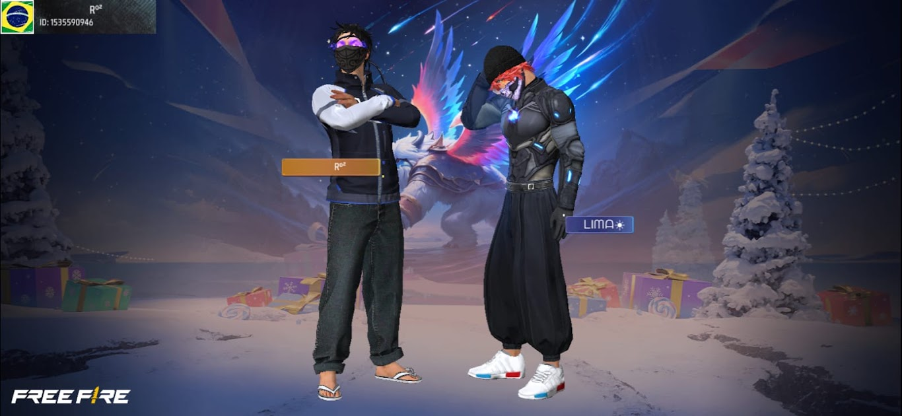
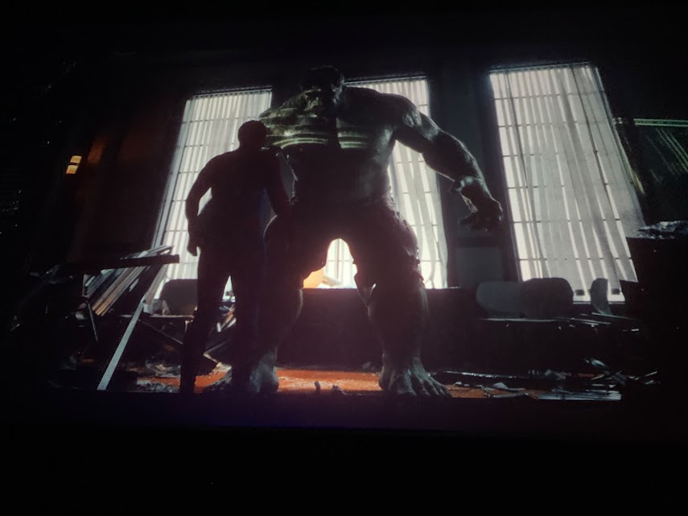
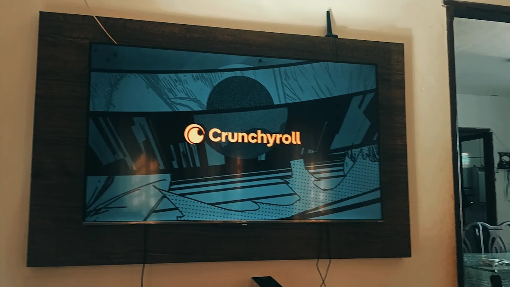
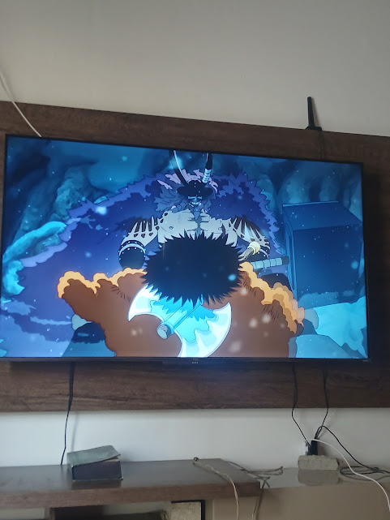
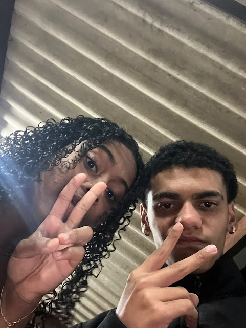

Gostos
Batalha de Rima:
Acompanho batalhas de rima desde 2018 e participo das mesmas desde 2025. Adoro demais a cultura Hip-Hop no geral. Eu me familiarizei mais com as batalhas por escutar musicas nesse estilo desde pequeno. Gosto de participar das batalhas, sendo meu esporte favorito. O Mc que eu me inspiro atualmente é o Jotape, sendo considerado o melhor do Brasil e concorrendo a ser o melhor da História.


Jogos:
Desde novo eu jogo video game e acompanho um pouco do mesmo. Não tenho um console ou um PC pra jogar atualmente, mas sempre me divirto jogando com amigos. Meu favorito é Minecraft, devido a eu acompanhar e jogar desde que me entendo por gente.



Filmes e Séries:
Eu gosto muito de filmes e séries. Não tenho um filme favorito, mas curto muito acompanhar a franquia da Marvel e meu herói favorito é o homem aranha. Minha série favorita é La Casa de Papel, devido as constantes revoltas ao sistema e a luta contra o mesmo. Acompanho muito animes no geral, tendo como favorito One Piece, devido a sua história e fortes criticas sociais.



Festas:
Eu comecei a participar de festas esse ano, e aprendi a curtir as mesmas com as pessoas em volta, conhecendo elas ou não. É loucura demais se divertir com um pessoal que você nunca viu na vida. É importante eu aproveitar minha vida universitária para ir para festas, depois de velho não vai ter mais a memsa graça.


